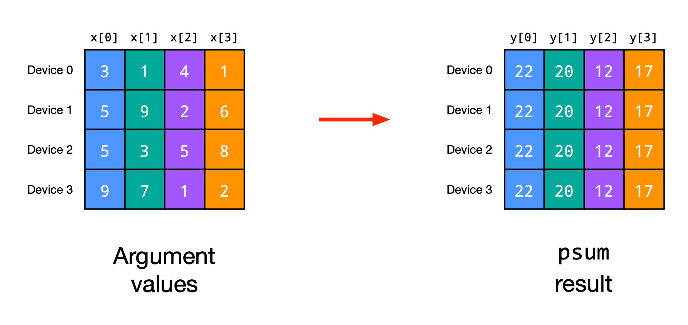
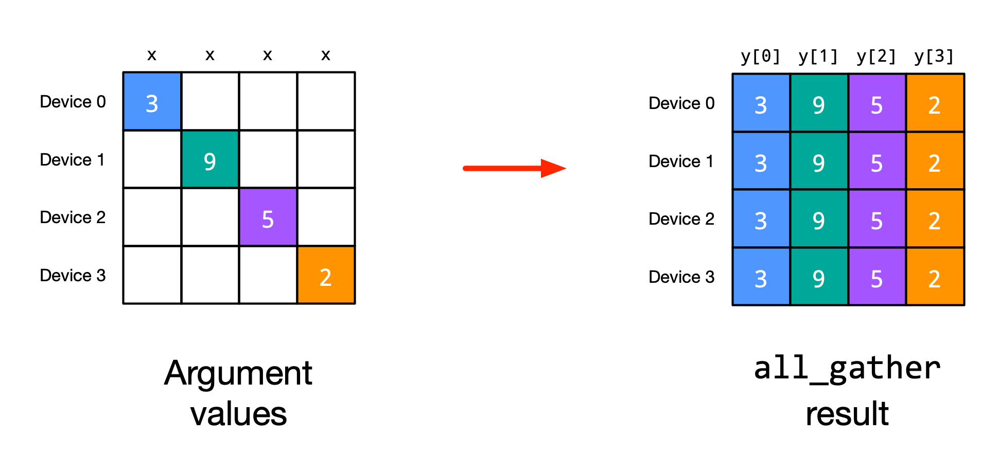
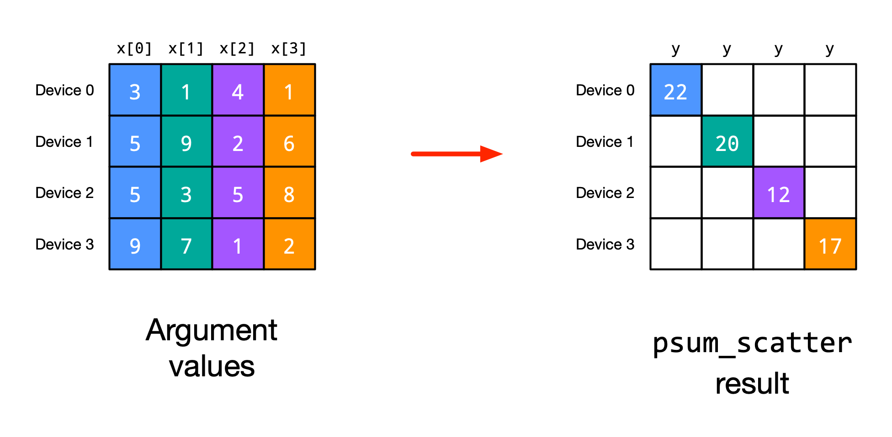
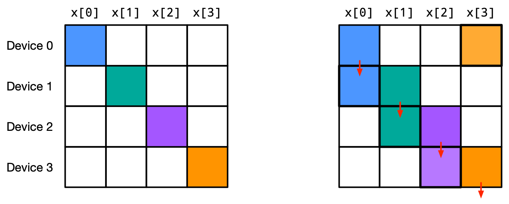

Recent success in deep learning has been driven by the availability of large datasets and the ability to train large models on these datasets. However, training large models on large datasets is computationally expensive and usually goes beyond the capability of a single accelerator like a GPU. To speed up training, we can use parallelism to distribute the computation across multiple devices. This is especially important as the size of the models and datasets continues to grow.
Before diving into different parallelism strategies for training large neural networks, this notebook will introduce the basic concepts of distributed, multi-device processing in JAX. In Part 2.2, we then implement different data parallelism strategies to train a small neural network on multiple devices. If you are already familiar with the basics of distributed computing in JAX, you can skip this notebook and move to Part 2.2.
While the intention of this notebook is to provide an implementation to run on multiple devices like GPUs or TPUs, not everyone will have easily access to such hardware. Luckily enough, in JAX, it is very easy to simulate multiple devices on a single CPU. This is done by adding the flag xla_force_host_platform_device_count=8 to the XLA environment variable XLA_FLAG. This will simulate 8 devices on a single CPU, which we can use to design and test our parallelized implementation. Once tested, we can remove the flag and could run the implementation without changes on the actual hardware if available.
Let’s set these environment variables below. If you are running on Google Colab, you do not need to select a GPU runtime, as we will simulate multiple devices on a single CPU. If you are running on your local machine and have multiple GPUs available, you can set USE_CPU_ONLY to False and run the implementation on the actual hardware.
import os# Set this to True to run the model on CPU only.USE_CPU_ONLY =Trueflags = os.environ.get("XLA_FLAGS", "")if USE_CPU_ONLY: flags +=" --xla_force_host_platform_device_count=8"# Simulate 8 devices# Enforce CPU-only execution os.environ["CUDA_VISIBLE_DEVICES"] =""else:# GPU flags flags += ("--xla_gpu_enable_triton_softmax_fusion=true ""--xla_gpu_triton_gemm_any=false ""--xla_gpu_enable_async_collectives=true ""--xla_gpu_enable_latency_hiding_scheduler=true ""--xla_gpu_enable_highest_priority_async_stream=true " )os.environ["XLA_FLAGS"] = flags
With the environment variables set, we can import our required libraries and start with the implementation.
import functoolsfrom typing import Any, Dict, Tupleimport flax.linen as nnimport jaximport jax.numpy as jnpimport numpy as npfrom jax.experimental.shard_map import shard_mapfrom jax.sharding import Mesh, NamedShardingfrom jax.sharding import PartitionSpec as PPyTree = AnyMetrics = Dict[str, Tuple[jax.Array, ...]]
Distributed Computing in JAX
This section will quickly introduce the basic concepts of distributed computing in JAX. We will focus on the basic building blocks which are essential for implementing data parallelism and other parallelism strategies in the following tutorials. For a more detailed introduction to distributed computing in JAX, we refer to the official documentation. If you are already familiar with parallelization strategies and shard map in JAX, you can skip this section and directly jump to the next part.
Basics
JAX supports distributed computation across multiple devices. We can check which devices we have access to by using the jax.devices() function. If we set up the environment variable xla_force_host_platform_device_count=8, we should see 8 (CPU) devices below:
jax.devices()
2024-03-07 10:46:09.748770: E external/xla/xla/stream_executor/cuda/cuda_driver.cc:273] failed call to cuInit: CUDA_ERROR_NO_DEVICE: no CUDA-capable device is detected
CUDA backend failed to initialize: FAILED_PRECONDITION: No visible GPU devices. (Set TF_CPP_MIN_LOG_LEVEL=0 and rerun for more info.)
If we would have many more resources that are placed in different servers or hosts, we can distinguish between the devices our process has access to and the devices that are available globally. We can check the local devices by using jax.local_devices() and the global devices by using jax.devices(). Since we only run a single process here, both will return the same devices. For now, we mainly focus on parallelization within a single process/machine since this is easiest in a tutorial notebook setting. However, the same concepts can be applied to parallelization across multiple processes/machines, and more details on JAX with multiple processes can be found in the official documentation.
When creating an array with JAX, we usually place it on a device directly. For instance, let’s create a simple array below and check its placement:
a = jnp.arange(8)print("Array", a)print("Device", a.device())print("Sharding", a.sharding)
The array is placed on the first CPU device by default. The attribute sharding describes how the array is laid out across devices. In this case, the array is placed on a single device. If we would now run any operation on this array, it would be executed on the first CPU device and the remaining devices would be idle. To distribute the computation across multiple devices, we need to shard the array. We can do this by first defining a Mesh. A mesh organizes the devices into a grid and assigns a logical name to each axis of the grid. Let’s create a mesh of our 8 CPU devices below, where we organize them all in a single axis with name i:
We can now use this mesh to shard our array. We first define a sharding using NamedSharding which takes as input the mesh and a specification of how the array should be sharded. This PartitionSpec (here abbreviated to P) takes as input a tuple of axis names, one value per dimension of the array. To shard an array axis over a certain mesh axis, we add the axis name at the corresponding position in the tuple. For instance, to shard the first dimension of our array over the i axis of our mesh, we would use the tuple P('i',):
sharding = NamedSharding( mesh, P("i"),)
To not shard an axis, we can use None in the tuple. Any axis that we do not shard will be replicated across all devices in the mesh. For instance, to shard the second dimension of another array over the i axis of our mesh, we would use the tuple P(None, 'i'). Any axis that is not specified in the tuple will be considered as None, i.e. replicated across all devices.
To set this sharding on an array, we use the jax.device_put function, but pass the sharding object instead of a single device:
The array is now sharded across all 8 CPU devices, each device holding a different part of the array. We can also visualize the sharding of the array using jax.debug.visualize_array_sharding:
jax.debug.visualize_array_sharding(a_sharded)
CPU 0 CPU 1 CPU 2 CPU 3 CPU 4 CPU 5 CPU 6 CPU 7
If we apply any operation on this sharded array, the computation will be distributed across all devices and the return value is again a sharded array. For instance, let’s apply a simple operation to the sharded array:
out = nn.tanh(a_sharded)print("Output array", out)jax.debug.visualize_array_sharding(out)
If we now write a function and jit it, the computation will also follow the sharding and be distributed across all devices.
Multi-axis mesh
In many of our parallelism strategies, we will use multi-axis meshes. For instance, over a certain group of devices, we may apply data parallelism, while over another group of devices, we may apply pipeline parallelism. We can define a multi-axis mesh by reshaping our devices into a multi-dimensional grid, and naming each axis. For instance, let’s reshape our 8 CPU devices into a 4x2 grid and name the axes i and j:
We can see that device 0 and device 1 are on the axis along dimension 1, and device 0, 2, 4, and 6 along dimension 0. The specific placement of each device in the mesh will depend on communication links between devices, e.g. which GPUs are connected via an NVLink. The benefit of using a multi-axis mesh is that we can shard arrays over different axes. For instance, consider a simple matmul operation with bias: y = x @ w + b. To maximize the parallelism of this operation, we can shard the batch dimension of the input x over the i axis, and the output dimension of the weight matrix w and bias b over the j axis. Let’s set this up below:
If we now apply the matmul operation, each device will compute the matmul between its part of the input and its part of the weight matrix. The result will be a sharded array across the i and j axes. We can visualize the sharding of the result below:
out = jnp.dot(x_sharded, w_sharded) + b_shardedprint("Output shape", out.shape)jax.debug.visualize_array_sharding(out)
Output shape (192, 128)
CPU 0 CPU 1 CPU 2 CPU 3 CPU 4 CPU 5 CPU 6 CPU 7
Note that when we check the shape of the array, it returns the global shape of the array and not the shape of the array on a single device. Hence, for some operations where we need to know the shape of the array on a single device, we need to adjust our code from single to multi-device execution. Alternatively, we can use one of JAX’s transformation functions like jax.pmap or shard_map which we will introduce in the next section.
Shard map
When using jax.jit directly on distributed arrays, we give the compiler the task to automatically parallelize the computation. For instance, if we compute a matmul where the features of x are distributed over devices, the compiler will automatically parallelize the computation and organize the communication between devices. However, in some cases like scaling deep learning models, we want to have more explicit control over the parallelization and communication. This is where shard_map comes into play. The transformation shard_map has been developed as an alternative to jax.pmap which was found to have flaws (see more here), and allows us to write simple and efficient parallelized code. In contrast to jit, we write per-device code with local array shapes and explicit communications. Besides being useful in scaling models in general, it is also well suited for our tutorials to discuss the different parallelization strategies and their explicit implementation.
Shard map is a transformation that takes a function, a mesh, and a sharding specification for the input and outputs. It then applies the function to the sharded inputs and outputs in a single-program multiple-data (SPMD) fashion. This means that the function is executed on each device with the local input and output arrays. As a first example, let’s reimplement the matmul operation from the previous section using shard_map. We first define the function matmul which takes as input the sharded arrays x and w and returns the sharded array y:
def matmul_fn(x: jax.Array, w: jax.Array, b: jax.Array) -> jax.Array:print("Local x shape", x.shape)print("Local w shape", w.shape)print("Local b shape", b.shape)return jnp.dot(x, w) + b
The print statements in the function are only for demonstration purposes to show the local shapes of the arrays on each device. We then apply shard_map to the function and pass the mesh and the sharding specifications for the input and output:
The input specification is a tuple with three elements, corresponding to our three input arrays x, w, and b. The output specification is a single element, corresponding to our output array y. We can now apply the function to the sharded arrays and check the result:
y = matmul_sharded(x_sharded, w_sharded, b_sharded)print("Output shape", y.shape)jax.debug.visualize_array_sharding(y)
Local x shape (48, 64)
Local w shape (64, 64)
Local b shape (64,)
Output shape (192, 128)
CPU 0 CPU 1 CPU 2 CPU 3 CPU 4 CPU 5 CPU 6 CPU 7
In comparison to jax.jit, we see that within the function, we have access to the local shapes of the arrays on each device. The final output is again in a global jax.Array format, which we can use for further operations and even combine with jax.jit operations. Note that we will also jit the shard_map operation in the following tutorials to speed up the computation.
Axis Communication
We will encounter many situations where we need to communicate between devices. For instance, in data parallelism, we need to aggregate the gradients from each device to update the model. In pipeline parallelism, we need to communicate the intermediate results between devices. JAX provides a set of communication operations to facilitate this. Here, we will go over some basic communication operations which we will use in the following tutorials. More details on the communication operations can be found in the official documentation.
Mean/Sum: One of the most common communication operations is jax.lax.psum which computes the parallel sum of an array across devices. Take for instance the following example (figure credit: JAX documentation):

The mean operation averages over all values on both devices. These operations will be frequently used in our parallelization strategies. For instance, in normalization layers like LayerNorm where the features are sharded over different devices, we need to sum/average the statistics of each individual device. Let’s create a function that normalizes the values of a sharded array with jax.lax.pmean:
As an example, we used shard map as a decorator to the function. We can now apply it to the array x and verify its global mean and standard deviation:
out = parallel_normalize(x)out = jax.device_get(out)print("Mean", out.mean())print("Std", out.std())
Mean -4.162818e-08
Std 1.0
Another usage of jax.lax.psum is to identify the size of a mesh axis in sub-modules when we have no direct axis to the mesh object. The line jax.lax.psum(1, axis_name) will return the size of the axis axis_name of the mesh, since we add 1 per device on the mesh axis. Since this operation is independent of any input, the compiler can optimize it away when jitted and we get the size of the axis without any runtime cost.
All-gather: Another common communication operation is jax.lax.all_gather which gathers, i.e. collects and concatenates/stacks, the values of an array from all devices. After this operation, all devices will have the same data over the gathered axis. For instance, consider the following example (figure credit: JAX documentation):

One case where we will need to use gathering is if a weight matrix is sharded over different devices, but we need the full weight matrix to compute the output on each device. We implement an example below where the weight matrix w is sharded over the i axis, and we want to gather the full weight matrix on each device before computing the matmul:
Original w shape (16, 128)
Gathered w shape (64, 128)
On input, each device only has a subpart of the weight matrix. After the all-gather operation, each device has the full weight matrix. With the full matrix, we can compute the matmul operation on each device and obtain the same result as if we would have computed the matmul on a single device.
Scatter sum: When taking the sum, we sometimes do not want to keep the full sum on all devices, but shard it again over the devices. This is where jax.lax.psum_scatter comes into play. It takes the sum of an array across devices and scatters the result across devices. For instance, consider the following example (figure credit: JAX documentation):

The sum of the array is computed across devices, and device \(n\) gets the sum of the values \(x[n]\). We can re-implement the example from the figure using jax.lax.psum_scatter:
A frequent usage of this operation is as the grad function of jax.lax.all_gather: each device originally held only \(x[n]\) and gathered \(x\) in the forward pass. In the backward pass, each device gets a gradient for every element in \(x\), and we need to sum the gradients of \(x[n]\) across all devices and place it back to device \(n\). This is done by using jax.lax.psum_scatter on the gradients. In contrast to jax.lax.psum, jax.lax.psum_scatter does not keep the full sum on all devices and requires fewer communications. We will use this operation later in the tutorial.
ppermute: Another useful operation is jax.lax.ppermute which communicates an array in a round robin fashion. If given a mesh axis with 4 devices, device 0 sends its data to device 1, device 1 sends its data to device 2, and so on. Device 3 sends its data to device 0, completing the loop. The operation looks something similar to the following figure (figure credit: JAX documentation):

The equivalent operation on a single device is np.roll. We can show an example of jax.lax.ppermute below:
For jax.lax.ppermute, we need to specify the permutation in which we want to communicate. In a ring topology, we can usually communicate upwards (i.e. device 0 to device 1) or downwards (i.e. device 1 to device 0). Which one to use depends on the specific use case.
Example usages include the communication of the intermediate results in pipeline parallelism, where we send the output of device 0 to device 1, device 1 to device 2, and so on. Furthermore, jax.lax.ppermute is a basic building block with which we can implement other communication operations we have seen so far like jax.lax.gather (permute \(N-1\) times and keep results) or jax.lax.psum_scatter (alternate permute and sum between adjacent devices). We will use this property of jax.lax.ppermute extensively in the tensor parallelism tutorial.
Axis Indexing
While a lot of deep learning modules can be implemented nicely in a single-program multiple-data (SPMD) fashion, there are some operations that require slightly adjusted operations per device. For instance, in pipeline parallelism, each device will have a slightly different processing pattern for which we need to adjust the compute graph. JAX provides for this purpose the jax.lax.axis_index function which returns the index of the current device along a certain axis. With that, we can identify the current device and adjust the computation accordingly. For instance, we can write a small function that returns the index of every device:
axis_idx_fn = jax.jit( shard_map(lambda: jnp.stack( [ jax.lax.axis_index("i"), # Device index in mesh along the "i" axis jax.lax.axis_index("j"), # Device index in mesh along the "j" axis ], axis=-1, )[None], mesh, in_specs=P(), out_specs=P( ("i", "j"), ), ))out = axis_idx_fn()out = jax.device_get(out)for i inrange(out.shape[0]):print(f"Device {i}: i-axis={out[i, 0]}, j-axis={out[i, 1]}")
As we can see, the index of each device within the mesh is returned, as we had originally specified in the mesh. Note that at the moment of writing this notebook (March 2024, jax version 0.4.25), jax.lax.axis_index is only supported within a jitted function of shard map, and eager compilation is not supported yet. However, since we anyways will jit our shard map operations, this is not a big limitation for us.
A common application of jax.lax.axis_index is the RNG handling. For instance, when using dropout, we want to have different dropout masks on each device when performing data parallelism. We can use jax.lax.axis_index to select a different RNG split per device. However, other RNG operations like the parameter initialization needs to use the same RNG key on all devices. This is why we cannot pass a different RNG key to each device in the shard map, but instead pass the same RNG key to all devices, and use jax.lax.axis_index to split the RNG keys across devices where it is needed. We implement this RNG splitting in the function below:
def fold_rng_over_axis(rng: jax.random.PRNGKey, axis_name: str) -> jax.random.PRNGKey:"""Folds the random number generator over the given axis. This is useful for generating a different random number for each device across a certain axis (e.g. the model axis). Args: rng: The random number generator. axis_name: The axis name to fold the random number generator over. Returns: A new random number generator, different for each device index along the axis. """ axis_index = jax.lax.axis_index(axis_name)return jax.random.fold_in(rng, axis_index)
By folding the RNG key over the i axis, each device with a different index will have a different RNG key, but shares the same RNG key across the j axis. For instance, device 0 and device 1 share the same RNG key because they have the same index along the i axis, but device 0 and device 2 have different RNG keys because they have different indices along the i axis. We will use this property in the following tutorials to implement data parallelism with different dropout masks on each device.
With that, we have covered the basic building blocks of distributed computing in JAX. We will use these building blocks to implement data parallelism in the following section.
Intermediate Summary
In this section, we have introduced the basic building blocks of distributed computing in JAX. We have learned how to shard arrays over a mesh, how to use shard_map to write per-device code, and how to communicate between devices. We have also learned how to use jax.lax.axis_index to identify the current device and adjust the computation accordingly. In the next part (Part 2.2), we will use these building blocks to implement data parallelism to train a neural network on multiple devices.
References and Resources
[Rajbhandari et al., 2020] Rajbhandari, S., Rasley, J., Ruwase, O. and He, Y., 2020. Zero: Memory optimizations toward training trillion parameter models. In SC20: International Conference for High Performance Computing, Networking, Storage and Analysis (pp. 1-16). Paper link
[Wang and Komatsuzaki, 2021] Wang, B., and Komatsuzaki, A., 2021. Mesh transformer jax. GitHub link
[Beyer et al., 2022] Beyer, L., Zhai, X., and Kolesnikov, A., 2022. Big Vision. GitHub link
[Google, 2024] JAX Team Google, 2024. Distributed arrays and automatic parallelization. Notebook link
[Google, 2024] JAX Team Google, 2024. SPMD multi-device parallelism with shard_map. Notebook link
[Google, 2024] JAX Team Google, 2024. Using JAX in multi-host and multi-process environments. Notebook link
[DeepSpeed, 2024] DeepSpeed, 2024. Zero Redundancy Optimizer. Tutorial link
If you found this tutorial helpful, consider ⭐-ing our repository. For any questions, typos, or bugs that you found, please raise an issue on GitHub.

 If you found this tutorial helpful, consider ⭐-ing our repository.
If you found this tutorial helpful, consider ⭐-ing our repository. For any questions, typos, or bugs that you found, please raise an issue on GitHub.
For any questions, typos, or bugs that you found, please raise an issue on GitHub.